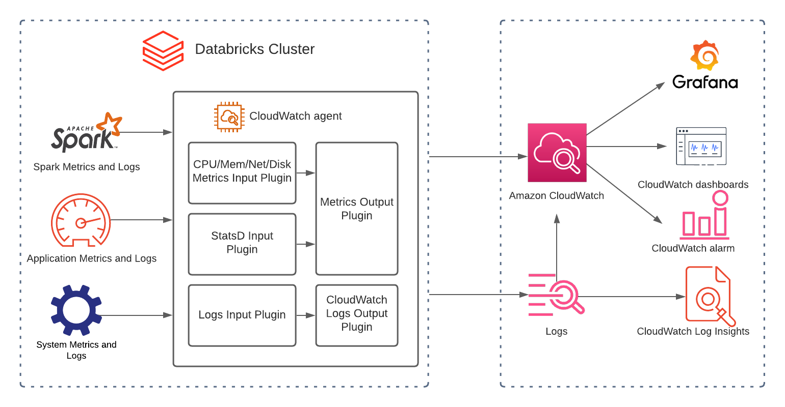
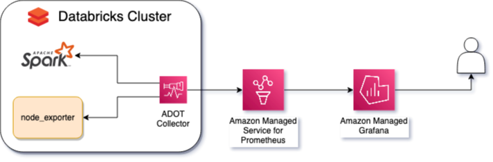

AWS における Databricks のモニタリングとオブザーバビリティのベストプラクティス¶
Databricks は、データ分析や AI/ML ワークロードを管理するためのプラットフォームです。このガイドは、AWS 上の Databricks を実行しているお客様が、AWS のネイティブサービスやオープンソースのマネージドサービスを使用してこれらのワークロードを監視するのを支援することを目的としています。
Databricks を監視する理由¶
Databricks クラスタを管理する運用チームは、ワークロードのステータス、エラー、パフォーマンスのボトルネックを追跡するための統合されたカスタマイズされたダッシュボード;時間経過に伴うリソース使用量合計やエラー発生率などの望ましくない動作に対するアラート;根本原因分析のための集中ログ、および追加のカスタマイズされたメトリクスの抽出などの恩恵を受けます。
モニタリングする項目¶
Databricks はクラスターインスタンス内で Apache Spark を実行します。Spark にはメトリクスを公開するネイティブ機能があります。これらのメトリクスにより、ドライバー、ワーカー、クラスター内で実行されているワークロードに関する情報が提供されます。
Spark を実行しているインスタンスには、ストレージ、CPU、メモリ、ネットワーキングに関するその他の有用な情報があります。Databricks クラスターのパフォーマンスに影響を与え得る外部要因を理解することが重要です。インスタンスの多いクラスターの場合、ボトルネックと全体的な健全性を理解することも同様に重要です。
モニタリングの方法¶
コレクタとその依存関係をインストールするには、Databricks の init スクリプトが必要です。これらは、Databricks クラスタの各インスタンスの起動時に実行されるスクリプトです。
Databricks クラスターは、インスタンスプロファイルを使用してメトリクスとログを送信するアクセス許可も必要です。
最後に、クラスタへの適切な参照に testApp を置き換えることにより、Databricks クラスターの Spark 構成でメトリクス名前空間を構成することがベストプラクティスです。
 図 1: メトリクス名前空間の Spark 構成の例
図 1: メトリクス名前空間の Spark 構成の例
DataBricks 向けの優れたオブザーバビリティソリューションの主要部分¶
1) メトリクス: メトリクスとは、一定期間に測定されたアクティビティや特定のプロセスを記述する数値です。Databricks には次のような異なる種類のメトリクスがあります。
CPU、メモリ、ディスク、ネットワークなどのシステムリソースレベルのメトリクス。 Custom Metrics Source、StreamingQueryListener、QueryExecutionListener を使用したアプリケーションメトリクス。 MetricsSystem によって公開されている Spark メトリクス。
2) ログ: ログは発生した一連のイベントを表しており、それらについて線形的なストーリーを伝えます。Databricks には次のような異なる種類のログがあります。
- イベントログ
- 監査ログ
- ドライバーログ: stdout、stderr、log4j カスタムログ(構造化ロギングを有効化)
- エグゼキューターログ: stdout、stderr、log4j カスタムログ(構造化ロギングを有効化)
3) トレース: スタックトレースはエンドツーエンドの可視性を提供し、ステージ全体のフローを示します。これはエラーやパフォーマンスの問題を引き起こしているステージ/コードを特定するためのデバッグに役立ちます。
4) ダッシュボード: ダッシュボードは、アプリケーション/サービスのゴールデンメトリクスのすばらしい概要表示を提供します。
5) アラート: アラートは、注意が必要な条件についてエンジニアに通知します。
AWS ネイティブのオブザーバビリティオプション¶
Ganglia UIやLog Deliveryなどのネイティブソリューションは、システムメトリクスの収集やApache SparkTMメトリクスのクエリには最適なソリューションです。しかし、改善の余地がある分野もあります。
- Ganglia はアラートをサポートしていません。
- Ganglia はログから導出されるメトリクス(例: ERRORログの成長率)をサポートしていません。
- データの正確性、データの鮮度、エンドツーエンドのレイテンシに関連するSLO(Service Level Objectives)とSLI(Service Level Indicators)を追跡するためのカスタムダッシュボードをGangliaで使用することができません。
Amazon CloudWatch は、AWS上のDatabricksクラスターを監視および管理するための重要なツールです。クラスターのパフォーマンスに関する貴重な洞察を提供し、問題をすばやく特定および解決するのに役立ちます。DatabricksとCloudWatchの統合および構造化ロギングの有効化により、これらの分野を改善できます。CloudWatch Application Insightsを使用することで、ログに含まれるフィールドを自動的に検出できます。また、CloudWatch Logs Insightsには、より高速なデバッグと分析のための目的構築型クエリ言語があります。
 図2: Databricks CloudWatchアーキテクチャ
CloudWatchを使用してDatabricksを監視する方法の詳細については、以下を参照してください。 How to Monitor Databricks with Amazon CloudWatch
オープンソースのオブザーバビリティオプション¶
Amazon Managed Service for Prometheus は、Prometheus 互換のマネージドサーバレスなモニタリングサービスで、メトリクスの保存や、そのメトリクスに基づいたアラートの管理を担当します。Prometheus は人気のオープンソースモニタリングテクノロジーで、Kubernetes に次いで Cloud Native Computing Foundation に属する 2 番目のプロジェクトです。
Amazon Managed Grafana は Grafana のマネージドサービスです。Grafana は時系列データの可視化に広く使用されるオープンソースのテクノロジーです。Grafana を使用することで、Amazon Managed Service for Prometheus、Amazon CloudWatch など、複数のソースからのデータを可視化できます。Databricks のメトリクスとアラートの可視化に使用します。
AWS Distro for OpenTelemetry は OpenTelemetry プロジェクトの AWS 対応ディストリビューションで、トレースとメトリクスの収集のためのオープンソースの標準、ライブラリ、サービスを提供します。OpenTelemetry を通じて、Prometheus や StatsD など、複数のオブザーバビリティデータフォーマットを収集し、このデータをエンリッチして、CloudWatch や Amazon Managed Service for Prometheus などの複数のデスティネーションに送信できます。
ユースケース¶
AWS ネイティブサービスは、Databricks クラスターを管理するために必要なオブザーバビリティを提供しますが、オープンソースのマネージドサービスを使用するのが最良の選択肢であるシナリオもあります。
Prometheus と Grafana は非常に人気のあるテクノロジーであり、すでに多くの企業で使用されています。オブザーバビリティのための AWS オープンソースサービスを使用すると、オペレーションチームは同じ既存のインフラ、同じクエリ言語、既存のダッシュボードとアラートを使用して、これらのサービスインフラ、スケーラビリティ、パフォーマンスを管理する大変な作業なしに、Databricks ワークロードを監視できます。
ADOT は、CloudWatch と Prometheus などの異なるデスティネーションにメトリクスとトレースを送信する必要があるチーム、または OTLP と StatsD などの異なるタイプのデータソースで作業する必要があるチームにとって最良の選択肢です。
最後に、Amazon Managed Grafana は CloudWatch と Prometheus を含む多数の異なるデータソースをサポートしており、複数のツールを使用することを選択したチームのデータを相関させるのに役立ちます。これにより、すべての Databricks クラスターのためのオブザーバビリティを可能にするテンプレートの作成と、インフラストラクチャとしてのコードを通じたプロビジョニングと構成を可能にする強力な API が実現します。
 図 3: Databricks オープンソース オブザーバビリティ アーキテクチャ
AWS Managed Open Source Services for Observability を使用して Databricks クラスターからのメトリクスを観測するには、メトリクスとアラートの両方を可視化するための Amazon Managed Grafana ワークスペースと、Amazon Managed Grafana ワークスペースでデータソースとして構成されている Amazon Managed Service for Prometheus ワークスペースが必要です。
収集する必要がある重要な 2 つの種類のメトリクスがあります: Spark メトリクスとノードメトリクスです。
Spark メトリクスには、クラスター内の現在のワーカー数やエグゼキューター数などの情報が含まれます。処理中にノード間でデータを交換するシャッフルや、データが RAM からディスクへ、ディスクから RAM へ移動するスピルなども含まれます。これらのメトリクスを公開するには、バージョン 3.0 以降で利用できるネイティブの Spark Prometheus を Databricks 管理コンソールを介して有効にし、init_script を介して構成する必要があります。
ディスク使用量、CPU 時間、メモリ、ストレージパフォーマンスなどのノードメトリクスを追跡するには、node_exporter を使用します。これは、さらなる構成なしで使用できますが、重要なメトリクスのみを公開する必要があります。
各ノードに ADOT Collector をインストールする必要があります。これにより、Spark と node_exporter が公開するメトリクスをスクレイピングし、cluster_name などのメタデータを注入し、これらのメトリクスを Prometheus ワークスペースに送信します。
ADOT Collector と node_exporter の両方を init_script を介してインストールおよび構成する必要があります。
Databricks クラスターは、Prometheus ワークスペースにメトリクスを書き込むアクセス許可を持つ IAM ロールで構成する必要があります。
ベストプラクティス¶
価値のあるメトリクスを優先する¶
Spark と node_exporter はどちらも、同じメトリクスに対していくつかのフォーマットで多数のメトリクスを公開します。 モニタリングとインシデント対応に役立つメトリクスをフィルタリングしないと、問題を検知するまでの平均時間が増加し、サンプルを保存するコストが増加し、価値のある情報が見つけづらく理解しづらくなります。 OpenTelemetry プロセッサを使用することで、価値のあるメトリクスのみをフィルタリングして保持したり、意味のないメトリクスをフィルタリングしたり、AMP に送信する前にメトリクスを集計および計算したりすることができます。
アラート疲れを避ける¶
有用なメトリクスが AMP に取り込まれたら、アラートの設定が不可欠です。 ただし、すべてのリソース使用量のバーストに対してアラートを出すと、アラート疲れを引き起こす可能性があります。 つまり、ノイズが多すぎるとアラートの重要度に対する信頼性が低下し、重要なイベントが検出されなくなるのです。 AMP のアラートルールグループ機能を使用して、あいまいさを避ける必要があります。 つまり、複数の関連するアラートで個別の通知が生成されるのを防ぐ必要があります。 また、アラートには適切な重要度を割り当てる必要があり、ビジネスの優先事項を反映する必要があります。
Amazon Managed Grafana ダッシュボードの再利用¶
Amazon Managed Grafana は、Grafana のネイティブテンプレート機能を利用して、すべての既存および新しい Databricks クラスターのダッシュボードを作成できるようにしています。これにより、各クラスターごとに視覚化を手動で作成および保守する必要がなくなります。この機能を使用するには、クラスターごとにこれらのメトリクスをグループ化するために、メトリクスに正しいラベルが付いていることが重要です。ここでも、OpenTelemetry プロセッサを使用することで実現できます。